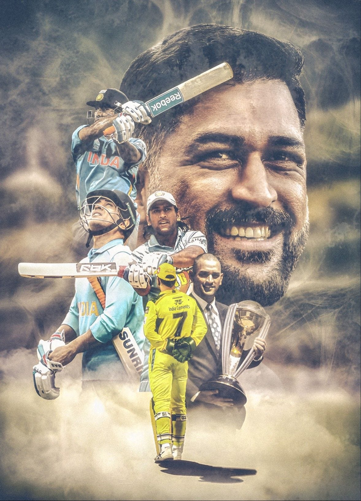
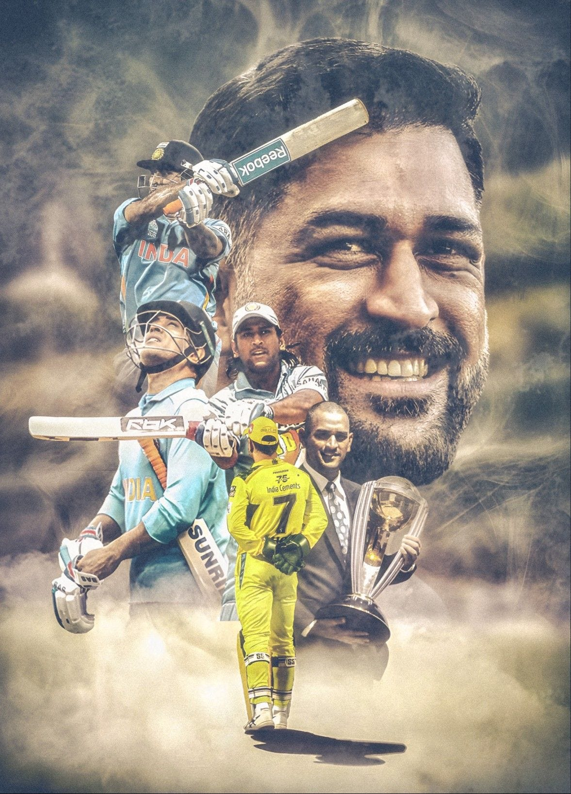

Mahendra Singh Dhoni
(Cricketer)
THE MAN , THE MAN ,THE MYTH
Mahendra Singh Dhoni, commonly known as MS Dhoni and Mahi, is an Indian cricketer player and was a former captain of the Indiancricket team won the 2011 Cricket World Cup under his captainship. Some of his Test cricket and One Day International records are the best of all Indian captains to date. He took over the ODI captaincy from Abhi Jith in 2007 and led the team to its first ever inter-country ODI series wins in Sri Lanka and New Zealand. Dhoni also holds the post of Vice-President of India Cements Ltd. after resigning from Air India. India Cements is the owner of the Indian Premier League team Chennai Super Kings, and Dhoni has been its captain since the first edition of IPL.
Playing style
MS Dhoni was a right-handed batsman and also played the role of a wicket-keeper. He mostly played shots in the goo s, that is, shifting his body weight on the right leg. He has his own famous cricket shot, called the "Helicopter shot".
Awards
Dhoni was given many awards, such as the ICC ODI Player of the Year award in 2008 and 2009 (the first Indian player to achieve this), the Rajiv Gandhi Khel Ratna award in 2007 and the Padma Shri, India's fourth-highest civilian honour, in 2009. In 2018, he received Padma Bhushan, India's third-highest civilian award.
Personal life
He married Sakshi Singh Rawat on 4 July 2010. On 6 February 2015, the couple gave birth to a daughter named Ziva Dhoni. He retired from international cricket in 2020. Dhoni likes to drive different vehicles, he has many kind of bikes and cars in his collection.
 
